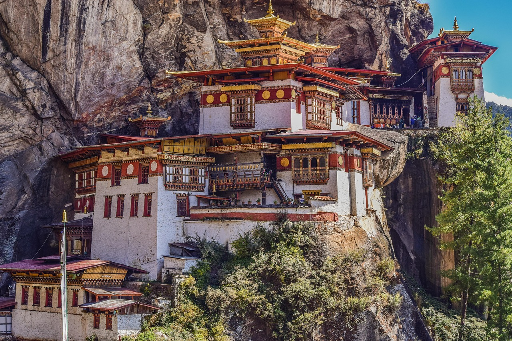
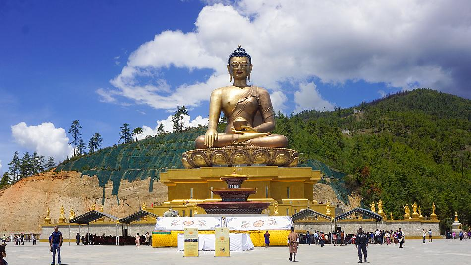
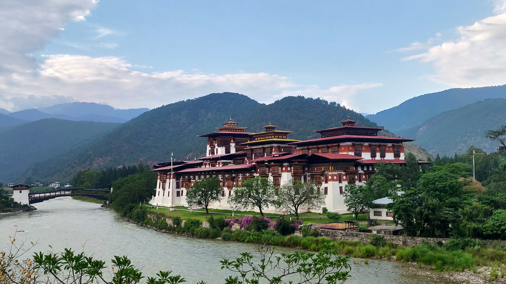
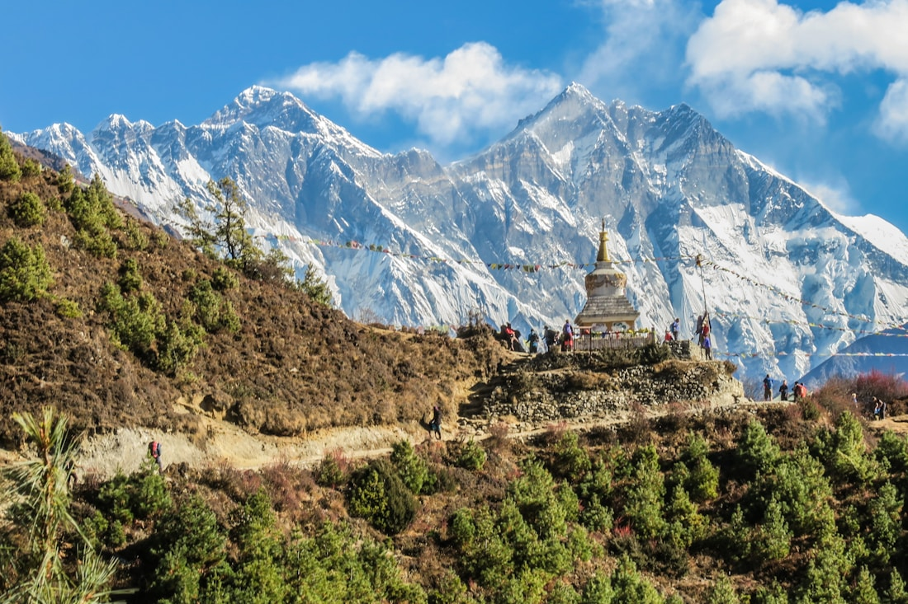
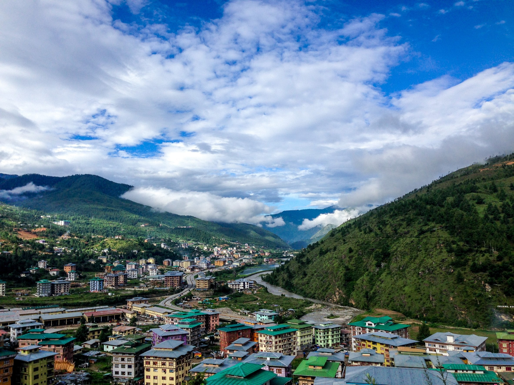
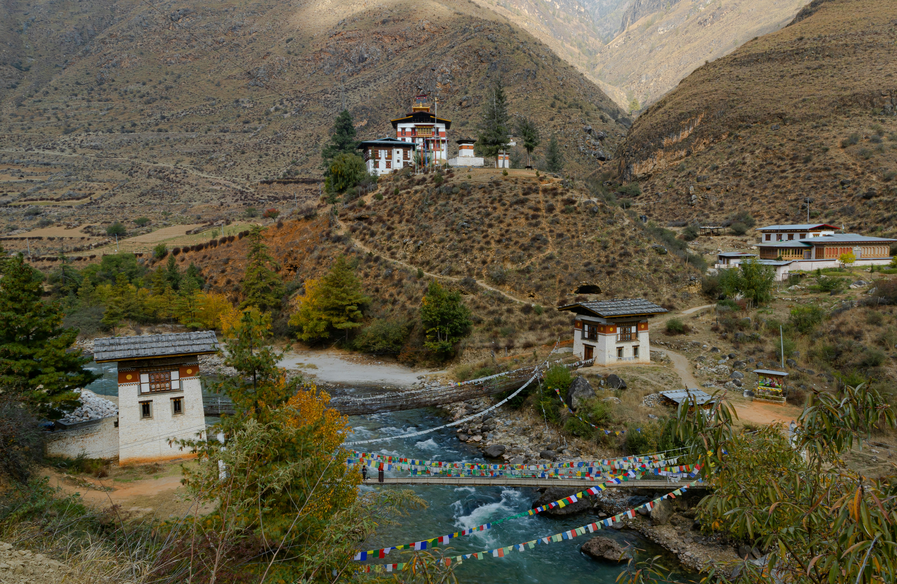
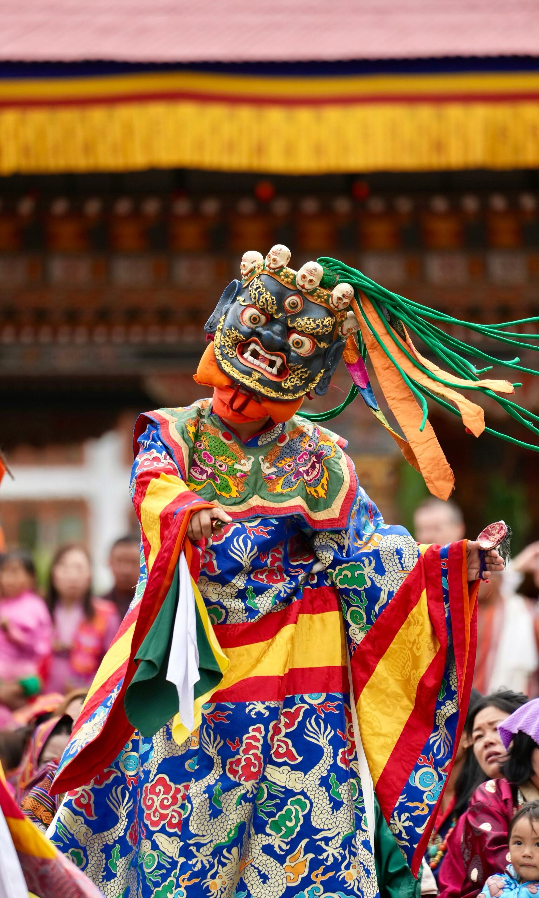
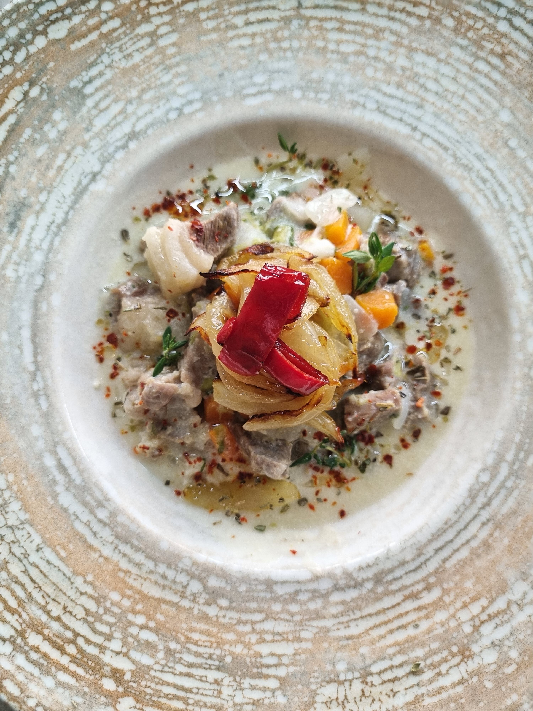

01 / WESTERN BHUTAN
Paro
Bhutan's most visited hub, home to Tiger's Nest, heritage and mountain views.
Discover Paro →Sacred valleys, living traditions, mountain adventures and warm local stories. Discover a Bhutan that feels personal, peaceful and unforgettable.
Bhutan blends Himalayan landscapes with living Buddhist culture, traditional architecture, local food, wildlife and a distinctive approach to wellbeing.
FlyToBhutan helps you go beyond the checklist — discover places, people, experiences and seasonal moments that make each journey feel uniquely yours.
Start with the three hubs at the heart of the classic Bhutan route, then go further into quieter valleys.

Bhutan's most visited hub, home to Tiger's Nest, heritage and mountain views.
Discover Paro →
Bhutan's cultural capital, with Buddha Dordenma, dzongs, markets and living craft.
Explore Thimphu →
Dzong heritage, rivers, suspension bridges and lush valley experiences.
Explore Punakha →Wildlife, spiritual heartlands and high valleys reward travelers who stay a little longer.

Black-necked cranes, open valleys and quiet village life.

Historic temples, rural roads and deeper cultural journeys.

Alpine meadows, traditional villages and local flavours.

A historic dzong and gateway to central Bhutan.

Birding, protected forests and Bhutan's wild south.
Pause among 108 chortens and mountain views on the road between Bhutan's two great valleys.
Add to your route →Build your trip around interests, not just locations.
Dzongs, monasteries, sacred sites, architecture and stories carried across generations.
Find experiences →Mountain trails, hiking, rafting and high-altitude landscapes for active explorers.
Find experiences →Forests, birds, wildlife and conservation-focused journeys across diverse ecosystems.
Find experiences →Quiet valleys, meditation, hot-stone traditions and restorative Himalayan moments.
Find experiences →Ema datshi, red rice, local markets and hands-on encounters with Bhutanese food.
Find experiences →Masked dances, music, prayer and vibrant community celebrations across the calendar.
See festivals →From cultural interpreters to trekking specialists, the right guide can turn a beautiful trip into a meaningful one.
Explore guide profiles, languages and specializations.
Find a guide aligned with your destination and interests.
Talk through your plans before the journey starts.
Bhutan's festival calendar brings together sacred rituals, masked dances, music, traditional dress and community celebration.
Bhutanese cuisine is warming, distinctive and deeply local. Start with chilli-and-cheese favourites, red rice and family-style meals.

Tell us what you want to experience. This demo planner turns your interests into a starting itinerary.